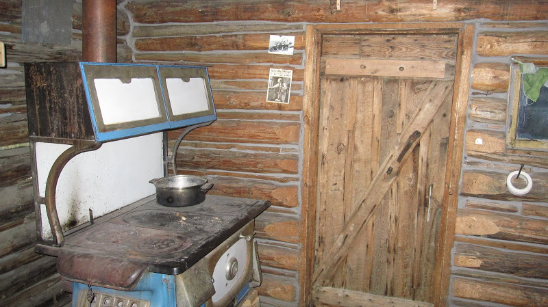
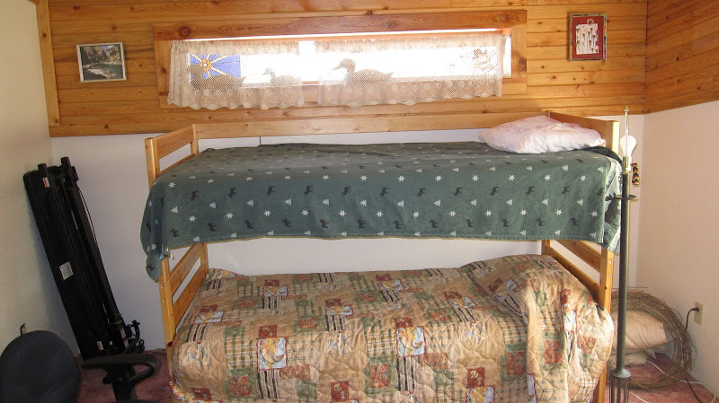
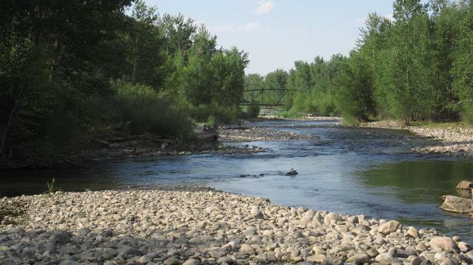
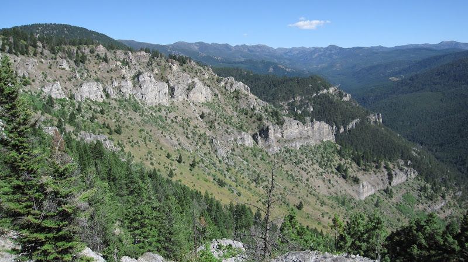

Being a WWOOFer
WWOOFers welcome! We accept, encourage and enjoy WWOOFers from all regions and backgrounds to join us in our Community Supported Agriculture Project and be a part of the unique culture of wild west Montana. WWOOFing Season typically begins in early June and Continues until early September, though off-season applicants may also be considered.
Requirements of WWOOFer: Knowledge and experience in farming and gardening is not required, though of course preferred. A certain amount of independence is desirable and WWOOFers are generally required to work on projects and do farm duties without much supervision (however instruction will be provided). In general, we'd like to make you feel like one of the family and introduce you to our way of life. An honest and friendly demeanor is appreciated.
Work Schedule: 5 hours per day and 25 hours per week (Monday through Friday). Working times are generally very flexible and can meet your schedule and/or needs.
Accommodation/Housing: We offer a variety of accommodation setups ranging from the rustic to the comfy-cozy:
 
Food/Meals: WWOOFers are generally provided an open kitchen in the main home, and ingredients to cook for themselves as they please. In addition, some meals (usually dinner) are cooked by your host. Special diets and preferences can be accomodated and respected. Meals can be taken alone or with the family as preferred.
Transportation: We are located 10.5 miles outside of the nearest urban area (though some attractions can be found locally). Daily car rides into the city of Bozeman cannot be provided, but can be accommodated on occasion. A bus service does run between the farm and Bozeman. And WWOOFers will have access to bicycles to use respectfully at their leisure. Hitchhiking is generally a feasible option as well.
Getting to the Farm: WWOOFers can be picked up at the Bus Station or Airport, or locations within reason.
Things to See and Do: (1) The farm itself is located in a very picturesque location amidst ranch-land. The Gallatin River is only a 5 minute walk away and offers swimming and tubing for those who will brave the chilly waters. (2) Located in Gateway, Montana--known as the gateway to the famous Yellowstone National Park--some 80 miles away, the park is accessible by car and, for the adventurous, hitchhiking. (3) The aforementioned city of Bozeman is in close proximity and, as a university town, offers all urban amenities as well as a lively music and bar scene. (4) The cowboy bar 'Stacy's' and the historic Gallatin Gateway Inn are located just down the road; (5) The 3 surrounding mountain ranges offer great opportunities for day and overnight hiking and the chance encounter with wildlife from bears to buffalo; and in the winter skiing. (6) Weekend trips around the state with family and friends are not uncommon.
 